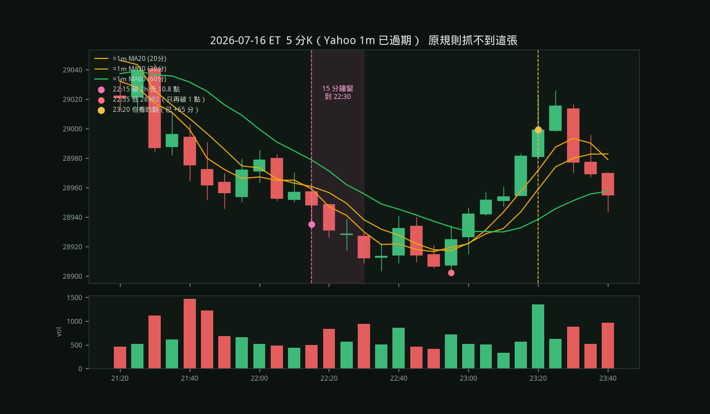

富途 2026/07/17 11:30（北京）= 美東 07-16 23:30。Yahoo 1m 只能回看約 30 天，30d 回測從 07-24 才開始，這晚根本不在 1m 資料裡。
07-24
用還在的 5 分 K 對過一開始的規則（破 2h 低 ≥10 點，15 根一分內收復 MA20/MA30 且 MA5>MA10>MA20）：

所以不是漏資料才沒進：這張是「慢慢磨底再翻」，不是「剛破 2h 低、15 分鐘內收復」。